Chío Medina
Psicóloga y docente
Me gustan la ciencia, la cultura y las sobremesas que se alargan con una cumbia. De Sayula, mi pueblo en Jalisco, siempre me queda algo por contar.


Psicóloga y docente
Me gustan la ciencia, la cultura y las sobremesas que se alargan con una cumbia. De Sayula, mi pueblo en Jalisco, siempre me queda algo por contar.

Psicóloga y terapeuta de reiki
Vivo entre libros, canciones y sueños. En las fiestas, búscame con la gente rara. A veces basta una buena pregunta para que se nos haga de día.